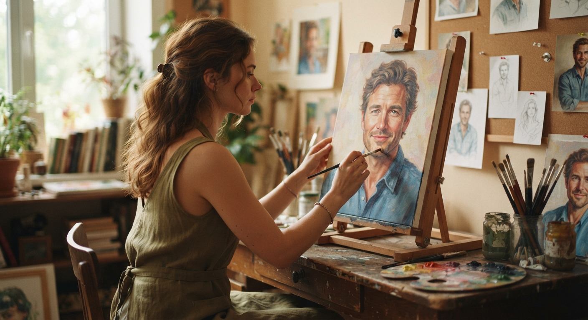

The Masterpiece You Never Saw
The Masterpiece You Never Saw is a reflection on the person we create in our hearts when we fall for someone—the version
of them shaped by our hopes, dreams, and deepest desires. Like an artist painting on a blank canvas, the speaker
gradually realizes that the portrait she created was not only about the person she loved, but also about discovering the
depth of her own heart.
Even without knowing what the other person truly felt, the connection left something meaningful behind: a transformed
self. This poem is a quiet expression of gratitude for an imagined love that became an unexpected journey of
self-discovery
🎵 "Piano Music - Piano" - PaulYudin (Pixabay Music)
